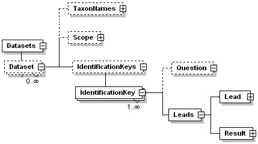

DonovanSharp - Tue Aug 29 2006 - Version 1.12
Parent topic: SddContents
SDD Part 0: Introduction and Primer to the SDD Standard
2.4 Dichotomous keys.
2.4.1 Traditional dichotomous keys.
Dichotomous keys (Box 2.3.1) are specialised identification tools comprising fragments of descriptive data arranged in couplets forming a branching tree. Each fragment (lead) comprises a small (occasionally verbose) natural-language description. Each node in the tree typically has two branches (dichotomy) but may have three (trichotomy) or more branches. Several differing formats of dichotomous keys are traditionally used.
Box 2.4.1 - Typical dichotomous keys
|
Key to Ascomycete genera |
|
Ascus unitunicate |
|
|
Clypeus present around ostiolar neck |
|
|
Clypeus poorly developed |
Glomerella |
|
Clypeus well developed |
Hyllachora |
|
Clypeus lacking |
|
|
Ascus widest in middle |
Physalospora |
|
Ascus clavate or cylindrical |
Glomerella |
|
Ascus bitunicate |
|
|
Ascostroma uniloculate |
Guignardia |
|
Ascostroma muliloculate |
Botryosphaeria |
|
Key to Australian skinks in the genus Ctenotus |
| 1 |
Dark upper lateral zone with one or more distinct series of
pale spots or blotches along the body |
2 |
| 1a |
Dark upper lateral zone obscurely mottled or uniform with at
most a few pale spots anteriorly |
3 |
| 2 |
Fewer than 25 lamellae under the fourth toe; supralabials 7-8 (usually 7); prefrontals separated |
C. arcanus |
| 2a |
More than 25 lamellae under the fourth toe; supralabials 8-9
(usually 8); prefrontals usually in contact |
C. alleni |
| 3 |
Pale mid-lateral stripe passes over the hindlimb to continue
along the tail |
C. inornatus |
| 3a |
Pale mid-lateral stripe extends to groin, then continues
along the front edge of the hindlimb |
C. coggeri |
| Key to Aira naturalized in Australia |
| 1. |
Inflorescence open and spreading |
2 |
| Inflorescence dense and spike-like |
*A.
praecox |
|
|
| 2. |
Pedicels 3-8 times spikelet length |
3 |
| Pedicels up to 3 times spikelet length |
4 |
|
|
| 3. |
Spikelets c. 3.5 mm long |
*A. provincialis |
| Spikelets c. 2 mm long |
*A. elegantissima |
|
|
| 4. |
Spikelets 2-2.5 mm long |
*A. cupaniana |
| Spikelets 2.5-3.2 mm long |
*A. caryophyllea |
|
|
2.4.2 SDD representation of dichotomous keys
While dichotomous keys can be presented in various formats, the essential elements of all dichotomous keys are identical. Each consists of a tree of questions, each with two (or occasionally more) possible choices, each choice leading to another question or a taxon.
A dichotomous key rendered in SDD requires three essential items: the names of the taxa being described, a set of questions (leads) used to separate the taxa, and the nodes defining the structure of the leads.
A simple SDD instance document for dichotomous key data has the basic structure shown below and in Example 2.4.2.
There are at least two different ways of generating a dichotomous key in a well structured SDD instance document, using statements or questions, these will be dealt with separately.

Example 2.4.2 - Dichotomous keys within SDD
<Datasets>
<TechnicalMetadata>
... information about the generator (Technical metadata)
</TechnicalMetadata>
<Dataset>
<TaxonNames>
... naming the entities described (Taxon names)
</TaxonNames>
<IdentificationKeys>
<IdentificationKey>
... the dichotomous key structure (see below)
</IdentificationKey>
</IdentificationKeys>
</Dataset>
</Datasets>
|
2.4.3 Dichotomous keys using statements
A dichotomous key structured with statements consists mostly of the elements <lead> and <result>. <Lead> points to another couplet while <Result> points to a taxon name.
Example 2.4.3 - Structure of dichotomous keys within SDD (statements)
<IdentificationKey id="key1">
<Representation>
<Label>Key to Australian Aira Using statements </Label>
</Representation>
<Leads>
<Lead id="lead1">
<Statement>
<Label>Inflorescence open and spreading </Label>
</Statement>
</Lead>
<Result>
<Statement>
<Label>Inflorescence dense and spike-like </Label>
</Statement>
<TaxonName ref="t1"/>
</Result>
<Lead id="lead2">
<Parent ref="lead1"/>
<Statement>
<Label>Pedicels 3-8 times spikelet length </Label>
</Statement>
</Lead>
<Lead id="lead3">
<Parent ref="lead1"/>
<Statement>
<Label>Pedicels up to 3 times spikelet length </Label>
</Statement>
</Lead>
<Result>
<Parent ref="lead2"/>
<Statement>
<Label>Spikelets c. 3.5 mm long </Label>
</Statement>
<TaxonName ref="t2"/>
</Result>
<Result>
<Parent ref="lead2"/>
<Statement>
<Label>Spikelets c. 2 mm long </Label>
</Statement>
<TaxonName ref="t3"/>
</Result>
<Result>
<Parent ref="lead3"/>
<Statement>
<Label>Spikelets 2-2.5 mm long </Label>
</Statement>
<TaxonName ref="t4"/>
</Result>
<Result>
<Parent ref="lead3".>
<Statement>
<Label>Spikelets 2.5-3.2 mm long </Label>
</Statement>
<TaxonName ref="t5"/>
</Result>
</Leads>
</IdentificationKey>
|
2.4.4 Dichotomous keys using questions
When a dichotomous key in an SDD instance document is structured with questions the statements act as answers to questions rather than independent statements.
Example 2.4.4.1 - Structure of dichotomous keys within SDD (questions)
<IdentificationKey id="key1">
<Representation>
<Label>Key to Ascomycete genera</Label>
</Representation>
<Question>
<Label>Is the ascus unitunicate</Label>
</Question>
<Leads>
<Lead id="lead1">
<Statement>
<Label>yes, unitunicate</Label>
</Statement>
<Question>
<Label>Is a clypeus present</Label>
</Question>
</Lead>
<Lead id="lead2">
<Statement>
<Label>no, bitubinate</Label>
</Statement>
<Question>
<Label>Is ascostroma uniloculate</Label>
</Question>
</Lead>
<Lead id="lead3">
<Parent ref="lead1"/>
<Statement>
<Label>yes, clypeus present around ostiolar neck</Label>
</Statement>
<Question>
<Label>Is clypeus well developed</Label>
</Question>
</Lead>
<Lead id="lead4">
<Parent ref="lead1"/>
<Statement>
<Label>no, clypeus lacking</Label>
</Statement>
<Question>
<Label>Is ascus widest in middle</Label>
</Question>
</Lead>
<Result>
<Parent ref="lead3"/>
<Statement>
<Label>clypeus poorly developed</Label>
</Statement>
<TaxonName ref="taxon1"/>
</Result>
<Result>
<Parent ref="lead3"/>
<Statement>
<Label>clypeus well developed</Label>
</Statement>
<TaxonName ref="taxon2"/>
</Result>
<Result>
<Parent ref="lead4"/>
<Statement>
<Label>ascus widest in middle</Label>
</Statement>
<TaxonName ref="taxon3"/>
</Result>
<Result>
<Parent ref="lead4".>
<Statement>
<Label>ascus clavate or cylindrical</Label>
</Statement>
<TaxonName ref="taxon1"/>
</Result>
<Result>
<Parent ref="lead2"/>
<Statement>
<Label>ascostoma uniloculate</Label>
</Statement>
<TaxonName ref="taxon4"/>
</Result>
<Result>
<Parent ref="lead2"/>
<Statement>
<Label>ascostoma multiloculate</Label>
</Statement>
<TaxonName ref="taxon5"/>
</Result>
</Leads>
</IdentificationKey>
|
For more information on defining taxon names using the <TaxonNames> element, see the topic Defining taxon names.
Note that taxa can also be arranged into hierarchies. See the topic Defining taxon hierarchies for more information.
<Scope> describes the taxon or set of taxa to which the description applies.
The <Result> element may include a <Subkey> element, which points to another complete dichotomous key. This allows a main/subkey arrangement, for example a key to the genera of a family with results leading to a subkey identifying the species within each genus.
Example 2.4.4.2 - Subkeys within SDD dichotomous keys.
<IdentificationKeys>
<IdentificationKey id="key 1">
<Representation>
<Label>Key to genera</Label>
</Representation>
<Leads>
<Lead id="lead1">
<Statement>
<Label>Inflorescence open and spreading</Label>
</Statement>
</Lead>
<Result>
<Statement>
<Label>Inflorescence dense and spike-like</Label>
</Statement>
<Subkey ref="key 2"/> (key to species of first genus))
</Result>
. . . etc.
</IdentificationKey>
</IdentificationKeys>
|
-- Main.DonovanSharp - 01 Jun 2006
{kind=link}